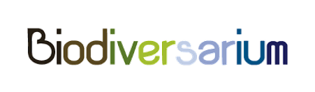

Tableau des expériences
Cette partie présente mes expériences en lien avec le PTP (stages et projets dans le cadre de ma formation ingénieur). Les TP sont quant à eux décrits dans la prochaine partie (technique).
Vous pouvez cliquer sur les titres pour atteindre la partie correspondante.
| Titre | Contexte | Date | Durée | Fonction(s) principale(s) |
|---|---|---|---|---|
| Hackathon | Développement d'un système interactif de visite du musée océanographique. | Du 08/11/18 au 09/11/18 | 2 jours | Développeur de l'application Android nécessaire à la visite interactive. |
| Projet tutoré de 4A | Vers une maison intelligente (recherches et prototype). | De 11/2017 à 06/2018 | 7 mois | Développeur de l'application Android permettant à un utilisateur de choisir ses préférences. |
| Stage de 4A | Construction d'un réseau, détermination de chemins et optimisation. | Du 11/06/18 au 31/08/18 | 3 mois | Stagiaire chargé de la mise en place d'un réseau de routeurs. |
| Projet intégrateur ISS | UltraOrdinaire: développer une application de customisation de meubles et se pencher sur une nouvelle lampe, la plus autonome en énergie possible. | Du 04/10/18 au 25/01/19 | 4 mois | Développeur du traitement d'images par filtres & recherches sur les sources d'énergie envisageables. |
| MOSH (Microcontrôleurs & Hardware Open-Source) | Développer un système de capteur de gaz. | Du 01/10/18 au 30/11/18 | 2 mois | Réalisation du schéma électronique et du KiCad. |
| Gestion des salles du GEI | Création d'une architecture de service pour gérer les salles du GEI (services WEB, OM2M pour l'accès aux ressources). Cette architecture permet d'activer lumières, chauffage ou alarme selon certains paramètres. | Du 19/12/18 au 25/01/19 | 1 mois | Développement de l'IceScrum pour planifier notre projet. Développeur des web services REST et SOAP. |
| Stage de fin d'études 5A | Renault: les IHM embarquées dans les voitures | Du 11/02/19 au 31/07/19 | 6 mois | Stagiaire chargé de rédiger un état de l'art sur les IHM (intelligentes ou non). Proposer un problème en lien, une solution et développer un prototype. |
Hackathon
L'environnement et le contexte
● Contexte : Un événement important du parcours proposé dans le cadre du PTP ISS correspond au hackathon. L’ensemble des étudiants du parcours se déplace à l’observatoire océanologique de Banyuls-sur-mer pour deux jours de réalisation de projet.
Le choix de chaque sujet est libre et doit seulement être en rapport avec l’observatoire ou l’aquarium qui en fait partie.
Nous étions un groupe de 5 personnes et avons choisi de dynamiser la visite de l’aquarium : 
En effet, nous avons eu la chance de pouvoir le visiter dès le premier jour et nous voulions rendre cette visite plus interactive.
● Notre idée : L’idée de base était donc de créer, tout au long de la visite, une interaction avec le visiteur avec l’installation de bornes. Pour cela il doit :
- télécharger une application sur son mobile ou sa tablette
- scanner le QR code de la borne devant laquelle il se trouve
- répondre aux questions ou jouer au jeu proposé qui peut parfois être à la fois sur l’application et sur la borne (réponses à donner sur l’application, code à écrire sur le clavier de la borne,…)
Voici d’ailleurs un dessin d’explication de cette idée :
● Matériel et fonctions à réaliser :
Concernant les éléments que nous devions réaliser il y avait donc :
- la borne en carton en forme d’animal pour le design
- le choix d’une architecture de données (ici OM2M)
- l’utilisation de plusieurs cartes Arduino et Intel Edison pour brancher les LED et capteurs de la borne
- la gestion de l’abonnement de ces cartes à OM2M
- la création de l’application Android associée (avec accès aux ressources OM2M)
Le Use Case que nous avions décidé de réaliser dans le très court temps qui nous était imparti était une série de trois QCM sur l’application qui allumait certaines LED de la borne. Il fallait ensuite taper les numéros correspondant aux LED allumées sur la borne sur un digicode. Si le code était le bon, l’utilisateur remportait la partie !
Nous avons donné un nom à ce projet : Pulpito !
Ma fonction
Durant ce projet, nous nous étions réparti les 5 tâches et j’avais donc la charge du développement de l’application.
En effet, nous n’avions pas beaucoup de temps et j’ai ainsi pu réutiliser mes connaissances acquises lors du projet tutoré de 4ème année en Android Studio [lien Projet] (code Java et xml). Les contraintes sur cette application étaient les suivantes : un design le plus ludique possible et un accès au ressources OM2M via quelques requêtes REST.
Voici deux captures d’écran de cette application que j’ai réalisée :
Connaissances et compétences mobilisées
Comme je l'ai précisé auparavant, j'ai pu utiliser mes connaissances en développement d'application Android.
L’Hackathon a permis de mettre en avant plusieurs compétences de ce semestre d’études :
- Etre capable de concevoir le logiciel nécessaire à l'utilisation du capteur de gaz et son IHM
- Résoudre un problème de manière créative
- Structurer et diriger un projet innovant
- Travailler en équipe avec des étudiants aux parcours multi-disciplinaires
- Exprimer et échanger des hypothèses
- Suggérer une stratégie pour résoudre le problème identifié
- Suggérer un modèle
- Choisir, concevoir et/ou justifier un protocole ou un prototype expérimental
Bilan
Finalement, nous avons présenté notre projet devant l’ensemble des étudiants, des enseignants présents et des acteurs de l’observatoire.
Voici la présentation rapide que nous avions élaborée : Présentation (pdf)
Je peux dire que cette expérience fut l’une des plus enrichissantes du semestre car elle a permis de mobiliser de nombreuses connaissances dans un laps de temps très court. On apprend à travailler de manière efficace en allant droit au but une fois que l’idée est bien définie, le point important est d’ailleurs de bien s’organiser.
Espérons que Pulpito soit l’avenir des musées pour permettre des visites plus ludiques !
Projet tutoré de 4A
L'environnement et le contexte
En quatrième année, nous avons effectué un projet tutoré. Nous avons tout d’abord choisi un sujet : "Vers une maison intelligente" et étions par groupe de 4 étudiants.
La première étape concernait la rédaction d’un état de l’art (jusqu’en janvier 2018) sur l’avancement technologique dans le domaine des smart-homes. Nous avons ensuite choisi de développer une idée innovante, puisque nous avions de meilleures connaissances sur les différentes technologies à utiliser.
● Choix du sujet : nous avons décidé de créer un système intelligent basé sur la reconnaissance faciale (actions effectuées dans la maison en fonction d’expressions du visage). En effet, grâce à notre idée, un utilisateur peut par exemple allumer une lumière simplement en souriant à la caméra.
● Matériel à disposition :
- Caméra Kinect
- Carte Intel Edison et ESP32
- Tablette sous Android
- Multiples capteurs et actionneurs
● Architecture : Pour gérer notre architecture nous avons utilisé la plateforme OM2M qui permettait de stocker nos ressources. Voici un schéma de notre architecture finale.
● Rendu final : Voici différents rendus concernant ce projet :
- le rapport de l’état de l’art sur les maisons intelligentes Etat de l'art (pdf)
- le rapport final du projet Rapport (pdf)
- une vidéo de présentation du projet :
Ma fonction
Pour ce projet j’ai été chargé du développement de l’application. Cette application permet à l’utilisateur de définir ses préférences concernant les actions à effectuer en fonction de l’expression souhaitée.
Elle envoie donc des requêtes REST à OM2M pour récupérer et modifier les valeurs des actionneurs lorsque nécessaire.
Problème rencontré : Mon principal soucis fut la découverte totale du développement d’une application.
Solution : J’ai tout d’abord suivi les tutoriels d’OpenClassrooms sur la création d’une application Android sous Android Studio. J’ai également dû apprendre à coder en Java sans avoir encore suivi les cours de programmation orientée objet, et à utiliser une librairie avec un client http pour communiquer avec les ressources OM2M.
Vous pouvez retrouver le code de l’application sur mon Github : [lien Github].
Connaissances et compétences mobilisées
Grâce au projet, j’ai pu prendre de l’avance sur plusieurs points :
- programmation orientée objet que je connaissais déjà rapidement avant les cours correspondants
- manipulation de la plateforme OM2M que nous avons réutilisée lors du PTP cette année (connaissances dans les standards et la configuration acquises lors de l’état de l’art)
- apprentissage du développement d’une application Android réutilisé lors du Hackathon
Les compétences correspondantes sont :
- Etre capable de concevoir le logiciel nécessaire à l'utilisation du capteur de gaz et son IHM
- Savoir comment situer les principaux standards de l'IoT
- Déployer une architecture conforme à un standard de l'IoT et implémenter un réseau de capteurs
- Déployer et configurer une architecture IoT utilisant OM2M
- Intéragir avec les différentes ressources de l'architecture en utilisant des services REST
- Intégrer une nouvelle technologie dans l'architecture déployée
- Résoudre un problème de manière créative
- Structurer et diriger un projet innovant
- Travailler en équipe avec des étudiants aux parcours multidisciplinaires
- Exprimer et échanger des hypothèses
- Suggérer une stratégie pour résoudre le problème identifié
- Suggérer un modèle
- Choisir, concevoir et/ou justifier un protocole ou un prototype expérimental
Bilan
C’est ce projet qui m’a donné envie d’effectuer le parcours ISS pour cette cinquième année. En effet il m’a permis d’avoir une première approche vers le domaine de l’IoT et de développer ma créativité lors du choix du projet.
Stage de 4A
L'environnement et le contexte
Dans le cadre d’un partenariat entre l’Université Fédérale de Toulouse et l’Afrique du Sud, j’ai eu la chance de pouvoir y effectuer un stage de 3 mois à la fin de ma quatrième année d’études.
Le projet confié comprenait trois parties permettant de construire un réseau :
- mise en place d’un réseau de routeurs avec l’installation d’un serveur (dernière version d’Ubuntu), puis de plusieurs logiciels, paramétrage des routeurs virtuels sur VMWare, installation d’un contrôleur (Opendaylight) pour pouvoir modifier le réseau et récupérer sa topologie
- visualisation du réseau en utilisant cette topologie : Pathman (code Python et html/javacript)
- recherche des plus courts chemins à l’aide d’algorithmes de graphes, puis l’optimisation des chemins trouvés (selon la taille des liens et les coûts)
Concernant l’environnement du stage, nous étions deux à travailler en parallèle sur ce projet pour avancer rapidement et avons eu deux présentations de projet (une intermédiaire et une finale) à effectuer.
Nous avons aussi rendu une documentation (rapport) : Rapport (pdf)
Ma fonction et bilan
Durant ce stage, j’ai participé à toutes les étapes de ce projet, du début à la fin, et j’ai donc pu améliorer mes connaissances en réseaux et surtout en SDN (réseaux émergeants logiciels), j’avais donc déjà acquis certaines bases pour la compétence "Etre capable d'analyser et d'évaluer les technologies de réseau sans-fil optimales" du Portfolio.
Concernant les différents rendus, ils m’ont permis de m’améliorer dans l’apprentissage de l’anglais, ce qui correspond aux compétences :
- Présenter et débattre (en anglais) les choix effectués
- Réaliser un rapport (en anglais) sur le projet développé
J’ai pu rencontrer certains problèmes dus au manque de connaissances et j’ai dû faire preuve de beaucoup d’autonomie pour effectuer des recherches par moi-même.
Pour finir, j'ai réalisé un poster à mon retour en France pour présenter à l’INSA ce stage enrichissant dans un pays tout aussi surprenant.
Voici donc ce poster : Poster (pdf)

Projet intégrateur ISS
L'environnement et le contexte
Le projet central de ma formation dans ce PTP Innovative Smart System a été le projet intégrateur, ou innovant. En effet, nous avons choisi un sujet au début du semestre que nous avions à réaliser sur un peu plus de 3 mois.
● Notre client : J’ai choisi de travailler avec UltraOrdinaire 
UltraOrdinaire est une entreprise toulousaine de design qui vise à améliorer les espaces de vie. Nous avons donc rencontré Mme. Nathalie Bruyère, cofondatrice, qui nous a présenté deux projets distincts :
- le développement d’une application de personnalisation de meubles
- le développement d’un prototype de lampe autonome en énergie
● Description détaillée du cahier des charges :
- Application : Pour l’application, elle doit être multiplateforme (IOS, Android et Web) et doit permettre à l’utilisateur de choisir tel ou tel meuble, avec telle ou telle taille (visualisation 3D). On doit trouver un menu de connexion et un menu de gestion du compte et des devis. Il doit aussi y avoir un menu permettant de charger une image et d’y appliquer des filtres. Une fois le filtre appliqué, l’utilisateur peut demander de graver son meuble avec cette image, ou demander une broderie à partir de ce filtre. Pour pouvoir envoyer cette image filtrée à la compagnie de gravure, les fichiers de sortie doivent être des fichiers SVG.
- Lampe : le sujet était plus ouvert, il fallait trouver une source d’énergie la plus autonome possible pour allumer une lampe de type bureau. Le rendu devait être à minima un prototype de base et un état de l’art des sources d’énergies.
● Equipe de projet : Nous formions une équipe de 5 personnes venant de parcours différents, trois d’Automatique et Electronique (Systèmes embarqués), une de physique et une d’informatique et réseaux.
Il y a toujours eu une très bonne cohésion dans le groupe et cela s’est fait ressentir au niveau des résultats.
● Organisation : Nous rencontrions Mme Nathalie Bruyère chaque semaine pour une réunion plus ou moins rapide au cours de laquelle nous échangions les questions préparées à l’avance. Cela permettait d’avancer rapidement dans le projet (pas de blocage sur plusieurs semaines), tout en informant notre cliente de notre avancement (préférable pour éviter les mauvaises surprises).
Méthodes et résultats
Voici les outils que nous avons utilisé pour chaque projet :
- Application : Ionic pour développer une application multiplateforme, Firebase pour construire la base de données, Processing pour générer les filtres d’images et Shape Diver pour la modélisation 3D des meubles.
- Lampe : modules Peltier pour récupérer l’énergie produite par une différence de température (pour essayer de récupérer les pertes de chaleur dans les maisons), LED pour l’éclairage, radiateurs pour dissiper la chaleur.
Nous avons réussi à produire une application fonctionnelle, avec un beau design et dont tous les composants marchent. Concernant la lampe, nous avons réalisé un petit prototype mais les essais ne donnent pas beaucoup de rendement pour une faible différence de température.
Voici notre rapport effectué dans le cadre de ce projet : Rapport (pdf)
Voici la présentation finale de ce projet :
Ma fonction
● Ce projet a, pour ma part, été divisé en deux grands intervalles de temps. La moitié de celui-ci a été consacré à l’imagination d’un prototype pour la lampe. En effet, j’ai aidé Sophie Rougeaux a rédiger un état de l’art des sources d’énergies les plus autonomes et renouvelables puis j’ai participé à essayer d’être créatif concernant une nouvelle source.
Vous pouvez trouver l'état de l'art ici : Etat de l'art (pdf)
Nous sommes parvenus à choisir deux prototypes de départ : une sphère transparente en verre remplie d’eau qui convergeait les rayons de lumière vers un panneau solaire, et l’idée de récupérer les pertes thermiques au sein d’une habitation.
Après plusieurs tests, nous avons abandonné l’idée de la sphère en verre pour des questions de faisabilité et de rendement. J’ai finalement aidé Sophie à développer un prototype sur la solution thermique.
Problème 1 : Dans ce projet le principal problème fut de tenter de calculer comment nous pouvions effectuer le stockage d’énergie sur une période donnée pour utiliser cette énergie à un moment voulu. Pour cela nous avons effectué de nombreuses recherches en autonomie sur les supercondensateurs et sommes allés nous renseigner auprès des enseignants du Génie Electrique. Finalement, nous n’avons pas mis en place ce stockage d’énergie mais avons réussi à effectuer les calculs dans le cas où ce système serait intégré.
● Le deuxième intervalle de temps fut pour moi le plus intéressant car je travaillais sur le développement des filtres d’images avec Agathe Limouzy. Pour cela, j’utilisais Processing en Javascript et des filtres trouvés en effectuant des recherches. Il a d’ailleurs fallu modifier chaque filtre pour correspondre aux attentes de notre cliente.
Voici, par exemple, un filtre appliqué sur une photo :
Problème 2 : la partie la plus difficile des filtres fut de comprendre les filtres déjà implémentés et de les modifier pour obtenir un fichier SVG et des tailles de filtres aux formats souhaités (A5, A4, A3, A2). Pour cela, de nombreuses recherches ont été nécessaires et le travail s’est fait en totale autonomie.
Connaissances et compétences
J’ai pu réutiliser mes compétences en électronique dans le projet sur la lampe et améliorer mes compétences en Javascript (que j’avais déjà manipulé lors de l’apprentissage du développement d’un site web) du côté de la programmation. J’ai également pu parfaire mon anglais lors des différents travaux et présentations à rendre.
Voici la liste des compétences très nombreuses (car c'est le projet central de la formation) utilisées lors de ce projet :
- Maîtriser l'architecture d'un système de gestion d'énergie, à simple stockage, à récupération d'énergie, savoir comment dimensionner les éléments de stockage selon le cahier des charges
- Définir les différentes phases du développement logiciel
- Appliquer l'une de ces méthodes (de management) à un projet
- Analyser un problème réel
- Suggérer une solution technologique au problème
- Implémenter un prototype pour résoudre le problème
- Présenter et débattre (en anglais) les choix effectués
- Réaliser un rapport (en anglais) sur le projet développé
- Résoudre un problème de manière créative
- Structurer et diriger un projet innovant
- Travailler en équipe avec des étudiants aux parcours multidisciplinaires
- Exprimer et échanger des hypothèses
- Suggérer une stratégie pour résoudre le problème identifié
- Suggérer un modèle
- Choisir, concevoir et/ou justifier un protocole ou un prototype expérimental
Bilan
Ce projet a pour moi été la surprise de ce semestre d’études, en alliant design et technique. Je ne m’attendais pas à être autant intéressé par un sujet donné.
Le fait de travailler avec une cliente réelle change aussi la perception que l’on a des projets car la pression est un peu plus forte et permet de maintenir un travail constant et efficace. Je suis vraiment heureux du travail que j’ai réussi à fournir, surtout concernant la programmation des filtres d’image.
MOSH
L'environnement et le contexte
Dans l’enseignement Microcontrôleurs & Hardware Open-Source j’ai choisi d’effectuer le mini-projet LoRa en autonomie car j’avais déjà quelques connaissances en Arduino. Ce mini-projet consistait à connecter un capteur de gaz au réseau LoRa pour transmettre ses données à un compte TTN (The Things Network). Il fallait ensuite afficher les données reçues grâce à une interface graphique (Node-RED).
Les trois grandes étapes de ce mini-projet ont donc été :
- création d’un shield pour Arduino Uno sous KiCad
- développement du software sur Arduino Uno (connexion de la carte LoRa au réseau TTN, mise en place des modes uplink et downlink)
- développement d’une interface graphique
Nous étions un groupe de 3 étudiants, dont 2 provenaient d’un parcours électronique et automatique et 1 qui provenait d’un parcours physique, ce qui nous a permis d’avoir des connaissances plus approfondies dans le fonctionnement physique des capteurs.
Ma fonction
Personnellement, j’ai participé à toutes les étapes du développement de ce projet. Cependant, j’ai été chargé plus précisément de la réalisation du PCB. Ce PCB devait intégrer le capteur de gaz, le montage d’amplification (en sortie du capteur, afin d’adapter l’impédance), la puce LoRa et 2 LED d’indication (que nous avions décidé). Il fallait que ce PCB puisse se "brancher" sur l’Arduino comme un shield.
Problème 1 : La partie difficile a été de prendre en main les différentes fonctionnalités de KiCad. J’ai utilisé les cours que nous avons suivi sur le développement d’un projet KiCad et j’ai effectué quelques recherches personnelles supplémentaires. J’ai tout d’abord appris à concevoir des empreintes à partir de composants physiques, puis j’ai réalisé le schéma électrique avant de réaliser le routage du PCB. J’a également utilisé un plan de masse sur les faces de ma carte.
Voici le schéma électronique réalisé sous KiCad :
Problème 2 : Le second problème auquel j’ai été confronté fut la découverte du réseau LoRa et des applications comme Node-Red, que nous n’avions jamais utilisées. Nous avons fait preuve de beaucoup d’autonomie et avons cherché à résoudre nos problèmes par nous-mêmes durant tout le projet.
Compétences et connaissances mobilisées
J’avais quelques connaissances basiques en programmation Arduino et des connaissances plus poussées en électronique mais la partie LoRa, Node-RED et le logiciel KiCad m’étaient encore inconnus avant de commencer ce mini-projet.
Les compétences correspondantes sont :
- Comprendre l'architecture des microcontrôleurs et comment les utiliser
- Etre capable de concevoir la chaîne d'acquisition (capteur, conditionneur, microcontrôleur) en fonction de l'application
- Etre capable de concevoir le circuit électronique du conditionnement du signal du capteur (conception et simulation)
- Etre capable de concevoir un shield pour interfacer le capteur de gaz
- Etre capable de combiner tous les composants mentionnés ci-dessus dans un dispositif intelligent
- Etre capable de concevoir le logiciel nécessaire à l'utilisation du capteur de gaz et son IHM
Bilan
Pour conclure, voici le lien du Github où se trouve l’ensemble de mon projet (KiCad, Arduino) : [lien Github].
Ce projet m’a été très bénéfique car il s’agissait du premier projet de ce semestre et il était déjà très enrichissant en termes de connaissances, alliant à la fois électronique et programmation dans le domaine de l’IoT. De plus, nous avons eu des plages horaires assez importantes et bien étalées ce qui permettait d’avancer à un bon rythme.
Gestion des salles du GEI
L'environnement et le contexte
Ce projet avait pour but de nous faire manipuler une architecture de service pour automatiser les salles du GEI. Nous devions tout d’abord choisir une liste de scenarios à implémenter, nous en avons choisi trois :
- allumer l’alarme si une présence est détectée en dehors des horaires d’ouverture, ainsi qu’éteindre les lumières et fermer les portes
- allumer la lumière si la luminosité de la pièce est plus faible que celle souhaitée, que l'on détecte une présence dans la pièce et que l’on est dans la plage des horaires d’ouverture
- allumer le radiateur si la température est en dessous de celle souhaitée et que l’on est dans la plage des horaires d’ouverture
Il a ensuite fallu définir les services web et l’architecture de notre projet pour pouvoir implémenter ces scénarios (REST pour accéder aux ressources, SOAP pour implémenter l’intelligence vis-à-vis des scénarios). Nous avons utilisé OM2M pour gérer les données nécessaires en créant un plugin permettant de créer toutes les ressources pour une salle du GEI.
Pour les capteurs et actionneurs, nous avons simulé leur existence avec un envoi automatique de données vers OM2M. Enfin, nous avons créé une interface web qui interagit avec OM2M via les web services de type REST qui permet à un utilisateur de manipuler et observer les ressources d’une salle.
Pour s’organiser, nous avons utilisé la méthode Agile avec le logiciel de gestion IceScrum (définition de features, stories).
Ma fonction
Dans ce projet, j’ai été chargé de définir les scénarios d’utilisation et d’aider à la création des services web de type REST et SOAP. J’ai aussi été chargé de créer l’organisation IceScrum.
Problème : Nous avons eu de nombreux problèmes de compatibilité entre les versions des différents imports ce qui a causé une grosse perte de temps. Heureusement, nous avons réussi à trouver des solutions pour optimiser le temps qu’il nous restait.
Compétences mobilisées
Je n’avais pas beaucoup de connaissances dans le domaine des architectures de service mais savais utiliser OM2M et les requêtes REST, grâce au projet tutoré de quatrième année et au cours d’intergiciel suivi ce semestre.
Voici la liste des compétences acquises :
- Savoir définir une Architecture Orientée Services (SOA)
- Déployer une SOA avec des services web
- Déployer et configurer une SOA utilisant SOAP
- Déployer et configurer une SOA utilisant REST
- Intégrer un gestionnaire de processus dans une SOA
- Définir les différentes phases du développement logiciel
- Connaître les différentes méthodes de management de projet
- Appliquer l'une de ces méthodes à un projet
- Exprimer et échanger des hypothèses
- Suggérer une stratégie pour résoudre le problème identifié
- Suggérer un modèle
- Choisir, concevoir et/ou justifier un protocole ou un prototype expérimental
Bilan
Pour conclure ce projet, je trouve dommage qu’il soit arrivé si tard dans le semestre et que nous ayons dû le boucler dans les deux dernières semaines, alors qu’il nous aurait fallut beaucoup plus de temps.
Cependant, nous avons réussi à déployer une gestion des salles assez agréable, avec une belle interface web et qui respecte le cahier des charges. De plus, le projet permet de bien mettre en avant les outils découverts durant les TD du module.
Le rapport est disponible : Rapport (pdf)
Stage de fin d'études 5A
Bilan
Après de nombreuses recherches et d'entretiens passés chez différentes compagnies, j'ai finalement décidé d'effectuer mon stage de fin d'études chez Renault Software Labs
Comme son nom l'indique, cette filiale de Renault travaille sur le logiciel embarqué des voitures.
Voici la liste des missions qui me seront confiées pendant ce stage :
- Rédiger un état de l'art concernant toutes les technologies liées aux IHM des voitures
- Choisir des cas d'utilisation concrets à implémenter dans l'IHM
- Réaliser un premier prototype de cette idée innovante (environnement Android)